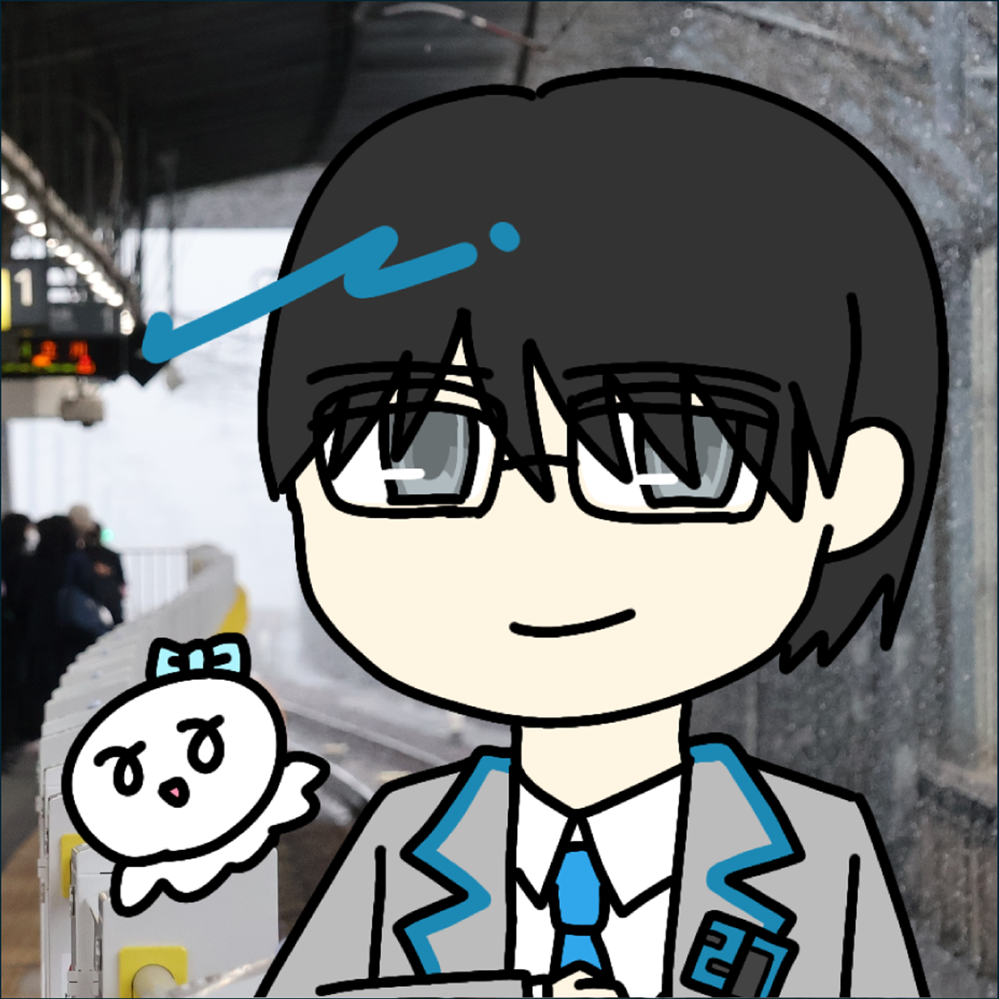

AIだと決めてかかる前に、まずできるチェックをしないか
はじめにこんにちは、まもうなGPTです。最近、生成AI、特に画像生成分野におけるAIの進化には目を見張るものがあります。ChatGPTやGoogle Geminiの画像生成機能に関しては、現実と遜色ないものを出してくるなど、目覚ましい進歩を...

小田急線沿線在住。Microsoft PowerPointを駆使して通勤電車の車内案内表示器（LCD / トレインビジョン）を限界まで精密に再現しています。鉄道ブログメディア「Freedom Train」ライターとしても活動中。好きなものは車内旅客案内表示（セサミクロ等）、水瀬いのりさん、小田急電鉄。

はじめにこんにちは、まもうなGPTです。最近、生成AI、特に画像生成分野におけるAIの進化には目を見張るものがあります。ChatGPTやGoogle Geminiの画像生成機能に関しては、現実と遜色ないものを出してくるなど、目覚ましい進歩を...

特記のない限り、情報はすべて記事公開地点のものです。はしがきこんにちは。好きな四字熟語は「燈籠光柱」と「廃材芸術スクラップアート」。どうもまもうなです。さて、「まもうなのLCD再現ギャラリー」の第4回として、東京メトロ13000系のLCD(...

特記のない限り、情報はすべて記事公開地点のものです。はしがきこんにちは。好きな四字熟語は「燈籠光柱」と「廃材芸術スクラップアート」。どうもまもうなです。さて、「まもうなのLCD再現ギャラリー」の第3回として、E235系1000番台のLCD(...

特記のない限り、情報はすべて記事公開地点のものです。はしがきこんにちは。好きな四字熟語は「燈籠光柱」と「廃材芸術スクラップアート」。どうもまもうなです。さて、「まもうなのLCD再現ギャラリー」の第2回として、E233系7000番台のLCD(...

特記のない限り、情報はすべて記事公開地点のものです。はしがきこんにちは。好きな四字熟語は「燈籠光柱」と「廃材芸術スクラップアート」。どうもまもうなです。今回からは、私のX(旧Twitter)との連動記事として、パワポで再現したLCD画像の補...

はしがき新宿を起点に、箱根の玄関口である小田原までを結ぶ「小田原線」、湘南エリアに至る「江ノ島線」、多摩ニュータウンに至る「多摩線」の3路線を擁する小田急電鉄。そして、そんな小田急電鉄と相互直通運転を行う東京メトロ千代田線とJR常磐緩行線。...

はしがきこんにちは。墓標は横アリに立ててきました。未来まで語り継がれる神話、できたね。まもうなです。今回は、久しぶりにLCDに関するおはなし。2025年7月某日、東急池上線・多摩川線を走る7000系の7101FにセサミクロでないLCDが登場...

イラスト：Azusa 撮影日：2025年10月1日2025年10月1日。前日の9月30日に開業40周年を迎えた埼京線系統に、「新顔」が加わった―。はしがきこんにちは。好きな四字熟語は「燈籠光柱」と「廃材芸術スクラップアート」。どうもまもうな...

※本記事で述べている考察は、あくまで筆者自身の見解であり、所属している組織の見解、また小田急電鉄の公式見解ではありません。ご留意ください。本記事の内容に関して小田急電鉄等関係各所に直接問い合わせることはご遠慮ください。はしがきこんにちは。好...

【撮影日】2025年8月31日はしがきこんにちは。好きな四字熟語は「燈籠光柱」と「廃材芸術スクラップアート」。どうもまもうなです。今回の記事は、無駄に時間をかけて短い距離を移動するおはなし。前置き長くしても仕方がないので、本編に行きましょう...
コミックマーケット C106 / C108 頒布作品（B5判 フルカラー）。
PowerPointの標準機能だけで車内LCD（トレインビジョン）を描くための解説本。キャンバス比率の設定から、フォントの選び方、図形結合を用いた立体駅構内図の作画、コンマ秒単位のアニメーション同期調整などをまとめています。
ご意見・ご感想、各種ご相談はメール（mamouna.inori@outlook.jp）または X（@Mamouna_inori）のダイレクトメッセージまでお願いいたします。